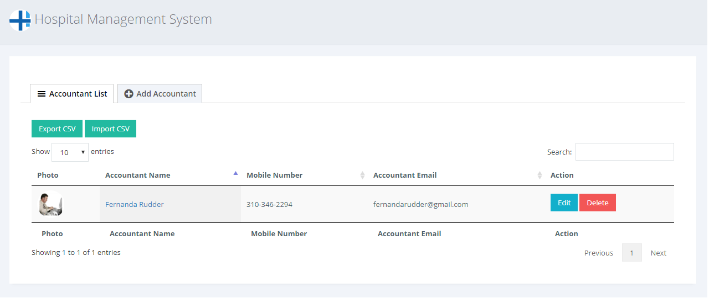
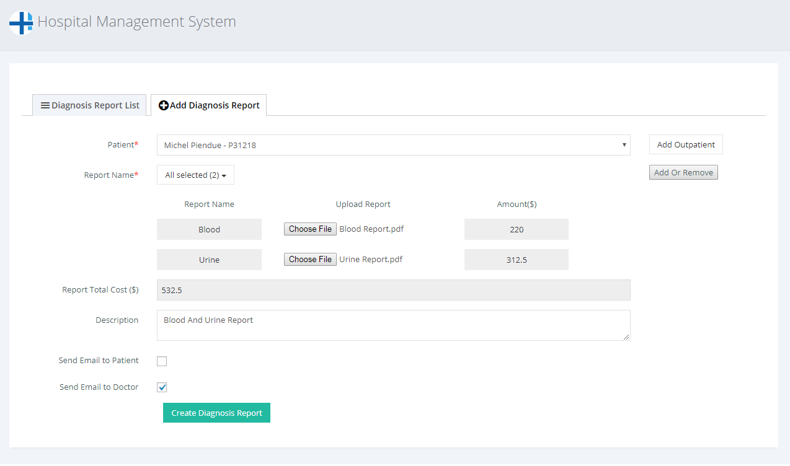
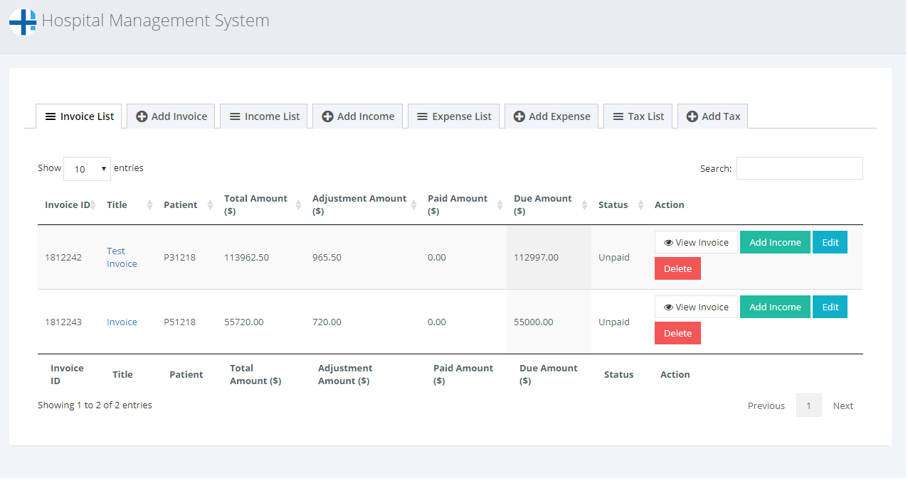
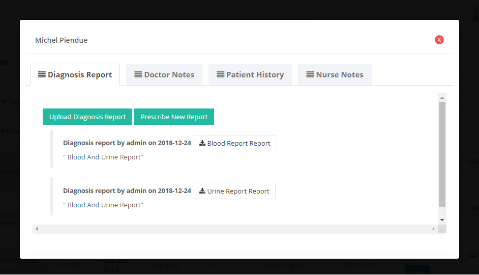
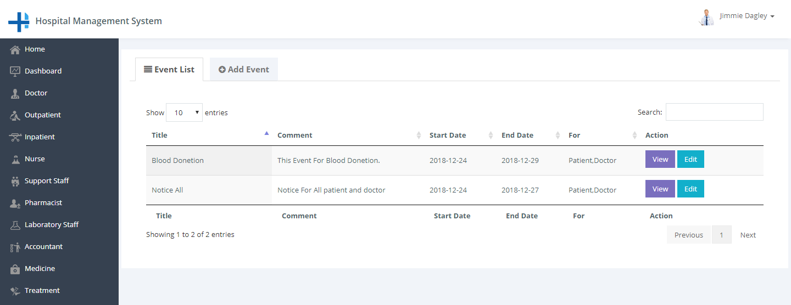
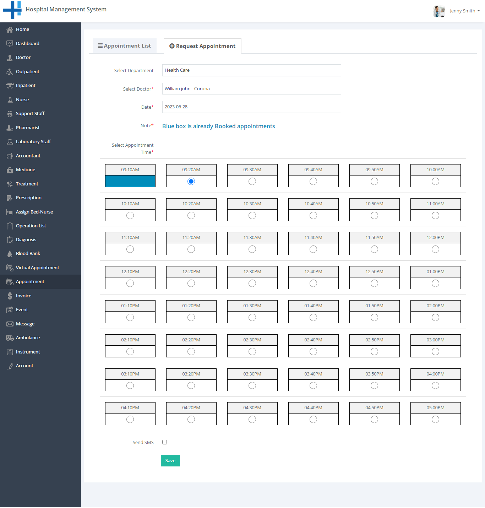
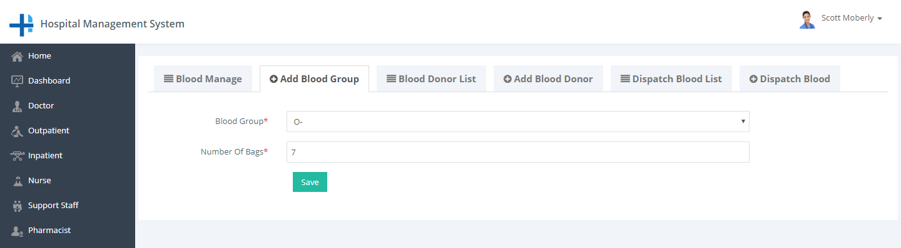
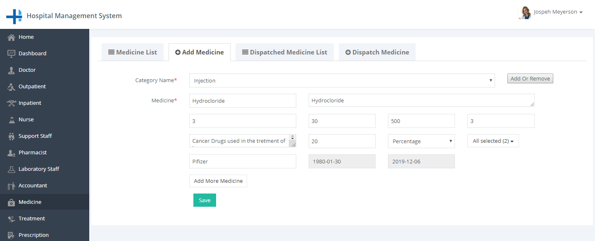

Hospital Management System
Documented by Mojoomla - at June 27 2023
A) Introduction
Hospital Management System for WordPress plugin is the ideal way to manage complete hospital operation. It has different user roles like the doctor, patient, nurse, pharmacist, accountant, laboratory staff and Support staff.
This user guide covers all options that this plugin provides. Please read the documentation carefully as it probably contains answers to most of the questions that may arise. If you feel some aspect is not covered or have some questions, contact us via e-mail sales@mojoomla.com. We will do our best to answer you in the shortest time.
B) Installation
How to Increase WordPress memory limit
-
Method 1: you need to edit the wp-config.php file on your WordPress site.
1) Update config.php file
define( 'WP_MEMORY_LIMIT', '256M' );
-
Method 2: you need to edit the .htaccess file on your WordPress site.
1) Update .htaccess file
php_value upload_max_filesize 256M
php_value post_max_size 256M
php_value max_execution_time 600
php_value max_input_time 600
How to Install WordPress Plugins via Dashboard
-
1. Go to “Plugins” in your WordPress dashboard
Once you have your ZIP file, go back to your WordPress wp-admin panel, click on “Plugins” in the sidebar menu, and then on the “Add New” button.

-
2. Get the plugin archive
You can get hospital_managment.zip file on a downloaded plugin zip file.
-
3. Upload your plugin archive
From there, click on the “Upload Plugin” button visible at the top.
-
4. Activate the plugin
When WordPress finishes , you’ll only need to activate the plugin.
After doing so, the plugin is online and you can start using it.

How to Install WordPress Plugins via SFTP/FTP
-
1. Extract the WordPress plugin ZIP file to a folder on your computer.
First please extract the plugin ZIP file on your local computer. When a ZIP file is extracted, some unzip software may add a parent folder outside of the plugin folder. In the next step, please make sure to upload the plugin folder which directly contains the plugin files, not its parent folder.
-
2. Upload the plugin folder to your FTP server
In this step, please use your FTP software to upload the extracted plugin folder to your FTP server, the WordPress folder wp-content -> plugins .
-
3. Activate the plugin
Log into your WordPress backend, left menu, goto Plugins -> Installed Plugins, find the plugin from the list and click Activate to activate it.
C) System Setting
1) License Settings
Click on License Settings under hospital management link-list to start setting up the system. Please fill all required fields. You can access plugin only after successfully registration of your Envato License key. You can use a single license key for the only single domain.Same license key can't user for different domains.
- Domain: This is your domain name. You do not need to enter it. The system automatically takes it.
- How to find your license key (purchase code)
- Envato License key: Enter Envato License key.
- Email: Enter your email.
2) Setup Wizard
This all step follow for complate setup wizard.
- General Setting:You can set all the settings as per your requirement by clicking on General Settings.
- Add Doctor: You can add doctor by clicking on Add Doctor.
- Schedule Setup: You can set appointment schedule setup for doctor by clicking on Schedule Setup.
- Add OutPatient: You can add outpatient by clicking on Add OutPatient.
- Add Medicine: You can add medicine by clicking on Add Medicine.
- Add Treatment: You can add treatment by clicking on Add Treatment.
- Add Prescription: You can prescribe prescription for patient by clicking on Add Prescription.
- Dispatch Medicine: You can dispatch medicine for patient by clicking on Dispatch Medicine.
- Create Invoice: You can create invoice by clicking on Create Invoice.
D) Fronted Pages Setting
- Login page Setting
- Frontend side Login Page
- Patient Registration Page Setting
- Frontend Registration Page
After installing this plugin create a login page with simply create a page.
Now all user can login from this login page.
Just create one page and put this shortcode [hmgt_patient_registration] in page content.
E) Setting Up Language
Hospital Management System Plugin is translation ready meaning you can edit the po files by which you can translate the text to any language.
The steps to do the translation are as follows. For eg let us consider translation to French.- Download and install Poedit.
- Open the file hospital-management / languages folder → hospital-mgt-fr_FR.po using Poedit .
- Choose the Source text and set its corresponding French text in Translation Text Area.
- Save the changes.
- For change language, you need to go to Settings menu and select Site Language from the drop-down.
F) Admin
1) Dashboard
Admin side dashboard view.
2) General Settings
Click on General Setting under hospital management link-list to start setting up the system . You are advised to fill all fields of General settings as these details are used in a different section of whole the system .You can change these settings as per your requirement.
- Hospital Name: Enter the name of the hospital.
- Starting Year: Enter starting year of the hospital.
- Hospital Address: Enter address of the hospital.
- Phone No.: Enter the official phone number of the hospital.
- Country: Enter country hospital Located in.
- E-mail: Enter the official e-mail address of the hospital.
- Date Formate Select date formate.
- Hospital Logo: Enter hospital logo.
- Profile Cover Image: Upload hospital photo and this will be used for profile background.
- User Can Change Profile Picture: If you want to user Can Change Profile Picture then enable it.
- Hospital Name print in Prescription: If you want to Hospital Name print in Prescription then enable it.
- Staff can Message To Admin: If you want to staff can Message to admin then enable it.
3) Doctor
You can add new Doctor and manage all doctors as well as view the complete list of all Doctors.
- Add Doctor Information
- Name: Enter new doctor name.
- Department: Select a department for the new doctor.
- Add Or Remove: If doctor belongs department not on the list and you want to add department then click on Add Or Remove button. you can add new department from here.
- Specialization: Select specialization of doctor.
- Add Or Remove: If doctor have specialization, not on the list and you want to add specialization then click on Add Or Remove button. you can add new specialization from here.
- Degree: Enter Doctor have a degree.
- Visiting Charge: Enter doctor's visiting charge.
- Visiting Charge Tax: Enter doctor's visiting charge tax.
- Consulting Charge: Enter doctor's consulting charge.
- Consulting Charge Tax: Enter doctor's consulting charge tax.
- Home Town Address: Enter hometown address of the doctor.
- City: Enter city name of the doctor.
- State: Enter state name of the doctor.
- Country: Enter the country name of the doctor.
- Office Address: Enter Office address of the doctor.
- City: Enter city name of doctor office.
- State: Enter state name of doctor office.
- Country: Enter country name of doctor office.
- Zip code: Enter zip code of doctor address.
- Mobile Number: Enter mobile number of the doctor.
- Phone: Enter phone number of the doctor.
- Email: Enter email id from the doctor. Email ID must be unique.
- Username: Enter username to enable doctor login. Username must be unique.
- Password: Enter a password of doctor for login.
- Image: Upload profile image of the doctor.
- Curriculum vitae: Attach curriculum vitae of doctor has submitted to hospital.
- Education Certificate: Attach education certificate of doctor has submitted to hospital.
- Experience Certificate: Attach experience certificate of doctor has submitted to hospital.

4) In-Patient
You can manage all information about In-patient and also manage information of guardian.
- Add In-patient Information step one
- Patient Id: Here patient Id will be automatically generated for each new patient. So that you do not need to enter this field.
- Name: Enter new patient name.
- Home Town Address: Enter hometown address of the patient.
- City: Enter city name of the patient.
- State: Enter state name of the patient.
- Country: Enter the country name of the patient.
- Zip code: Enter zip code of patient address.
- Mobile Number: Enter mobile number of the patient.
- Email: Enter email id of patient. Email ID must be unique.
- Username: Enter username to enable patient login. Username must be unique.
- Password: Enter password of patient for login.
- Image: Upload profile image of the patient.
- Add In-patient Information step two
- Guardian Id: Enter guardian id for the guardian of the patient. This is not required field.
- Patient Id: Display current patient id.
- Name: Enter guardian name of the patient.
- Home Town Address: Enter hometown address of guardian.
- City: Enter city name of the patient.
- Mobile Number: Enter mobile number of guardian.
- Phone: Enter the phone number of guardian if available.
- Relation With Patient: Enter relation of a guardian with the patient.
- Image: Upload profile image of guardian.
- Add In-patient Information step three
- Patient Id: Display current patient id.
- Admit Date: Enter admit date of patient.
- Admit Time: Enter admits time of the patient.
- Patient status: Select current status of the patient.
- Assign Doctor: Select doctor for assign to the patient.
- Symptoms: Enter symptoms for the patient.
- View Detail
- Diagnosis Reports
- Doctor Notes
- Patient History
- Nurse Notes
- Charges
After completion of the first step of add inpatient click on Save and Next Step.Step form will be displayed.
After completion of the second step of add inpatient click on Save and Next Step. Step three will be displayed.
If you have not added any doctor still now and you want to add new doctor then click on Add Doctor button and you will see following doctor form popup.
Admin can view detail of particular patient by clicking on view detail button. This will open up details in the pop-up box. From here admin can also all view history of the patient in the hospital.

Display all charges for a particular patient.
5) Out-Patient
You can manage all information about Out-patient.
- Add Out-patient Information
- Patient Id: Here patient ID will be automatically generated for each new patient. So that you do not need to enter this field.
- Name: Enter new patient name.
- Select Blood Group: Select blood group of patient.
- Assign Doctor: Select doctor for assign to the patient.
- Symptoms: Enter symptoms for the patient.
- Diagnosis Report: Choose diagnosis report of the patient.
- Home Town Address: Enter hometown address of the patient.
- City: Enter city name of the patient.
- State: Enter state name of the patient.
- Country: Enter the country name of the patient.
- Zip code: Enter zip code of patient address.
- Mobile Number: Enter mobile number of the patient.
- Email: Enter email id of patient. Email ID must be unique.
- Username: Enter username to enable patient login. Username must be unique.
- Password: Enter password of patient for login.
- Image: Upload profile image of the patient.
After completion of the first step of add Outpatient click on Save Patient.
6) Nurse
You can add a new Nurse information and view the complete list of Nurse. The system allows the Nurse can handle patient in the hospital.
- Add Nurse
- Department: Select department for a new nurse.
If department not available in the list which you want to select then click on Add Or Remove button and add new department.
Must fill all required fields in adding nurse form for add new staff member.
7) Support Staff
You can add a new Support Staff information and view the complete list of Support Staff. The system allows the Support Staff can handle admit a new patient.
- Add Support Staff
- Department: Select department for new Support Staff.
If department not available in the list which you want to select then click on Add Or Remove button and add new department.
Must fill all required fields in add Support Staff form for add new staff member.
8) Pharmacist
You can add a new Pharmacist information and view a complete list of Pharmacist. The system allows the Pharmacist can handle medicine.
- Add Pharmacist
Must fill all required fields in adding Pharmacist form for add new Pharmacist.
9) Laboratory Staff
You can add a new Laboratory Staff information and view a complete list of Laboratory Staff. The system allows the Laboratory Staff can handle patient diagnosis reports and blood bank.
- Add Laboratory Staff
Must fill all required fields in adding Pharmacist form for add new Laboratory Staff.
10) Accountant
You can add a new Accountant information and view a complete list of Accountant. The system allows the Accountant can handle hospital invoice data.
- Add Accountant
Must fill all required fields in adding Accountant form for add new Accountant.
11) Medicine
You can add a new Medicine and view a complete list of Medicine.
- Add Medicine
- Medicine Name: Enter medicine name for add new medicine.
- Category Name: Select Category Name for new medicine.
If medicine category name not available in a list which you want to select then click on Add Or Remove button and add new category name. - Description: Enter description for new medicine.
- : Enter price for new medicine.
- Batch Number: Enter batch number for new medicine.
- Quantity: Enter quantity for new medicine.
- Price: Enter price for new medicine.
- Medicine ID: Enter medicine id for new medicine.
- Note: Enter note for new medicine.
- Discount: Enter discount for new medicine.
- Tax: Select tax for new medicine.
- Manufacturer Company Name: Enter manufacturer company name of new medicine.
- Manufactured Date: Select manufactured date of new medicine.
- Expiry Date: Select expiry date of new medicine.
- Stock Status: Select status of new medicine.
- Dispatched Medicine List
- Dispatch Medicine
Must fill all required fields in adding Medicine form for add new Medicine.
Here you can manage medicine dispatch to patients.
Must fill all required fields in Dispatch Medicine form for dispatch medicine to the patient.
12) Treatment
You can add a new Treatment and view the complete list of all treatments provides from the hospital.
- Add Treatment
- Treatment Name: Enter treatment name for add new treatment.
- Treatment Price: Enter price for new treatment.
- Tax: Select tax for new treatment.
Must fill all required fields in adding Treatment form for add new Treatment.
13) Prescription
You can add a new Prescription and view the complete list of all Prescription. The Prescription can write only the doctors.
- Add Prescription
- Patient: Select patient for whom you create a prescription.
- Type: Select prescription type.
- Treatment: Select treatment from the list.
- Case History: Enter case history of the patients.
- Medication: select medicine and select how many time take this medicine in one day and Enter a number of days take this medicine.
- Note: Enter extra notes of patient health-related.
Must fill all required fields in adding Treatment form for add new Treatment.
If you have not added any Outpatient still now and you want to add new Outpatient then click on Add Outpatient button and you will see following Outpatient form popup.

14) Bed
You can add a new Bed and view complete a list of all Beds.
- Add Bed
- Bed category: Select bed category from the list.
- Bed Number: Enter bed number for a new bed.
- Charges: Enter charge for a new bed.
- Tax: Select tax for a new bed.
- Location: Enter location for a new bed.
- Description: Enter description for a new bed.
Must fill all required fields in add Bed form for add a new Bed.
15) Assign Bed/Nurse
You can assign a Bed and nurse to the patient and view the complete list of all assigned.
- Assign Bed
- Patient: Select patient to assign a bed.
- Patient Status: Select Patient Status for admitting the patient.
- Bed Type: Select bed type for assign to the patient.
- Bed Number: select bed number for assign to the patient.
- Allotment Time: select bed allotment date of the patient.
- Discharge Time: select discharge date of the patient.
- Nurse: select Nurse for assign to the patient.
- Charges: Enter charge for a new bed.
- Transfer Bed
Must fill all required fields in add Bed form for add a new Bed.
If you have not added any Bed still now and you want to add new bed then click on Add Bed button and you will see following bed form popup.
Must fill all required fields in transferring bed form for transfer patient bed.
16) Instrument Management
You can easily manage instrument using this module. Here you can add, edit or delete instruments. Here you can also assign the instrument to patients.
- Add Instrument
- Assigned Instrument List
- Assign Instrument
Must fill all required fields in adding Instrument form for add new Instrument.
Here you can manage instrument assigned to patients.
You can assign an instrument to the patient. For assign instrument to the patient, you need to fill all required fields.
17) Operation List
You can add an Operation and view the complete list of all completed Operations.
- Add Operation
- Patient: Select patient for Operation.
- Patient Status: Select Patient Status.
- Operation: Select Operation type for add Operation.
- Doctor: select Doctor for complete operation.
- Bed category: Select bed category from the list.
- Bed Number: select bed number for operation.
- Operation Date: select operation date of the patient.
- Operation Time: Enter operation time.
- Description: Enter the description of operation related.
- Operation Charge: Enter Operation Charge.
- Operation Status: select Operation status.
Must fill all required fields in add Operation form for add new Operation.
18) Diagnosis Report List
You can add a Diagnosis Report and view a complete list of all Diagnosis Report.
- Add Diagnosis Report
- Patient: Select patient for a Diagnosis Report.
- Report Name: Select Report Name.
- Upload Report: Upload document copy of the report.
- Description: Enter the description of the report related.
- Send Email to Patient: If you want to send email to patient then enable it.
- Send Email to Doctor: If you want to send email to doctor then enable it.
Must fill all required fields in adding Diagnosis Report form for add new Diagnosis Report.
19) Blood bank
You can add a Blood Group and view the complete list of all Blood Groups.
- Add Blood Group
- Blood Group: Enter Blood Group.
- No of Bags: Enter number of bags of this blood group.
- Blood Donor List
- Add Blood Donor
- Full Name: Enter the blood donor name.
- Age: Enter the blood donor age.
- Phone: Enter the blood donor phone number.
- Email: Enter Email from the blood donor.
- Blood Group: Select blood group of the donor.
- Number Of Bags: Enter number of bags of this blood group.
- Last Donation Date: Select last donation date of the blood donor.
- Dispatch Blood List
- Dispatch Blood
- Patient: Select patient name.
- Blood Group: Select blood group of the dispatch blood.
- Number Of Bags: Enter number of bags of this blood group.
- Charge: Enter charge od the dispatch blood.
- Tax: Select tax for dispatch blood.
- Date: Select date of dispatch the blood.
Must fill all required fields in add Blood Group form for add new Blood Group.
You can add a Blood Donor and view the complete list of all Blood Donors.
Must fill all required fields in add Blood Donor form for add new Blood Donor.
You can dispatch Blood and view the complete list of all dispatch Blood.
Must fill all required fields in dispatch Blood form for new dispatch Blood.
20) Appointment
You can add an Appointment and view the complete list of all Appointments.
- Add Appointment
- Patient: Select patient for appointment.
- Doctor: select Doctor for appointment.
- Date: Select Date for the appointment.
- Time: Select appointment time.
- Send SMS: If You want to send a message then select this checkbox.
- Doctor Schedule Setup
- Doctor: Select Doctor For Schedule Setup.
- Appointment Duration: select Appointment Duration For Schedule Setup.
- Time: Set appointment time schedule.

Must fill all required fields in adding Appointment form for add new Appointment.
Must fill all required fields for Schedule Setup. Here you can set doctor schedule setup.
Note: Existing doctor schedule setup is mandatory if using existing system.
21) Invoice
You can add an Invoice and view complete the list of all Invoice.
- Add Invoice
- Patient: Select patient for invoice.
- Invoice Title: Enter invoice title.
- Check Charges: Click on this button for check patient charges or add to a selected patient invoice.
- Subtotal Amount: Enter the Subtotal amount of invoice.
- Discount Amount: Enter the discount amount of invoice.
- Adjustment Amount: Enter adjustment amount of invoice.
- Date: Enter date of invoice.
- Comments: Enter comments of invoice.
Must fill all required fields in adding Invoice form for add new Invoice.
Here you need to keep checking just that checkboxes which transactions the amount you want to pay in this invoice.
Income List
You can add an Income and view a complete list of all Income.
- Add Income
- Patient: Select patient for invoice.
- Status: select status of invoice payment method.
- Payment Method: select payment methodo of invoice.
- Payment Details: Enter invoice payment details.
- Date: Enter date of invoice.
- Income Entry: Enter income entry and also enter the total amount of that entry.
- Add Income Entry: If you want to add other entry then click on Add Income Entry button.
Must fill all required fields in adding Income form for add new Income.
Expense List
You can add a-Expense and view a complete list of all Expense.
- Add Expense
- Party Name: Select Party Name for the expense.
- Status: select status of expense payment method.
- Date: Enter date of expense.
- Expense Entry: Enter Expense entry and also enter the total amount of that entry.
- Add Expense Entry: If you want to add other entry then click on Add Expense Entry button.
Must fill all required fields in adding Expense form for add new Expense.
Tax List
You can add an tax and view a complete list of all tax.
- Add Tax
- Tax Name: Enter tax name.
- Tax Value: Enter tax value.
Must fill all required fields in adding tax form for add new tax.
Print
You can also print invoice, income, and expense. For that just click on Print button from the pop-up.
Print Payment Receipt
You can also print invoice Payment Receipt. For that just click on Print Payment Receipt button.
22) Events
You can add a Events and view a complete list of all Events.
- Add Events
- Event/Notice: Select type of event from two type notice or event.
- Event Title: Enter title of the event.
- Event Comment: Enter event comments.
- Event Start Date: Enter event start date.
- Event End Date: Enter event End date.
- Event For: select for whom this event or notice.
- Send SMS: If You want to send a message then select this checkbox.
- SMS Text: If a message sent then this textarea display.Here enter message text.

Must fill all required fields in adding event form for add new event.
23) Message/Inbox
You can compose a new Message and view list of all Messages.
- Compose
- Message To: select receive role.
- Subject: Enter Subject of the message.
- Message Comment: Enter Message comments.
- Send SMS: If You want to send a message then select this checkbox.
- SMS Text: If the message sent then this textarea display.Here enter message text.
- Sent
Must fill all required fields in Compose message.
view list of all sends Messages.
24) Ambulance
You can add an Ambulance Request and view list of all Ambulance Request.
- Add Ambulance Request
- Ambulance: Select Ambulance.
- Patient: Select patient for you want to send ambulance request.
- Address: Enter address for ambulance request.
- Charges: Enter charges of the ambulance request.
- Tax: Select tax of the ambulance request.
- Request Date Date: Enter request date.
- Request Time: Enter request time.
- Dispatch Time: Enter dispatch time.
- Ambulance List
- Add Ambulance
- Ambulance Id: Enter Ambulance Id.
- Registration Number: Enter registration number of a new ambulance.
- Driver Name: Enter driver name.
- Driver Address: Enter driver address.
- Driver Phone Number: Enter driver phone number.
- Description: Enter description.
Must fill all required fields in the add ambulance request form to add a new ambulance request.
You can view a list of all Ambulance.
Must fill all required fields in add Ambulance form to add a new Ambulance.
25) Occupancy Report
You can view Occupancy Report by selecting time period.
Must be filled both required fields of view this report.
- Start Date: select start date.
- End Date: Select End date.
26) Operation Report
You can view operation Report by selecting time period.
Must be filled both required fields of view this report.
- Start Date: select start date.
- End Date: Select End date.
27) Fail Report
You can view Fail Report by selecting time period.
Must be filled both required fields of view this report.
- Start Date: select start date.
- End Date: Select End date.
28) SMS Setting
1) Clickatell Setting
- Select Message Service: Clickatell.
- Username: Enter Clickatell Username.
- Password: Enter Clickatell Password.
- API Key: Enter Clickatell API Key.
2) Twilio Setting
- Select Message Service: Twilio.
- Account SID: Enter Twilio SID.
- Auth Token: Enter Twilio Token.
- From Number: Enter Twilio From Number.
29) Auto Log/Activity
Admin can view auto log activity and also download and clear the log.
30) Mail Templates
From this module, you can set notification mail templates. You can also enable or disable this notification mail from general settings.
Each template have also short-codes. So you can use that short-codes in your mail template. Following Short-codes are available in mail templates.
- {{Hospital Name}} : Display hospital name in mail.
- {{Patient Name}} : Display patient name in mail.
- {{Patient ID}} : Display patient id in mail.
- {{UserName}} : Display username name in mail.
- {{Password}} : Display password in mail.
- {{Role Name}} : Display role name in mail.
- {{Login Link}} : Display login link in mail.
- {{Doctor Name}} : Display Doctor name in mail.
- {{Department Name}} : Display department name in mail.
- {{Nurse Name}} : Display nurse in mail.
- {{Appointment Time}} : Display appointment time in mail.
- {{Appointment Date}} : Display appointment date in mail.
- {{Doctor Name}} : Display Doctor in mail.
- {{InvoiceNo}} : Display invoice in mail.
- {{Bed ID}} : Display bed id in mail.
- {{Bed Category}} : Display display bed category in mail.
- {{Charges Amount}} : Display charge amount in mail.
- {{Receiver Name}} : Display receiver name of message in mail.
- {{Sender Name}} : Display sender name of message in mail.
- {{Message Content}} : Display message content of message in mail.
31) Access Right
Admin can also set access rights from here. we have displayed all frontend side pages and all roles. So that you can easily set access rights to each user role.
G) Doctor view
Click on Dashboard for view doctor side dashboard.
1) Doctor
Click on Doctor for view complete list all doctors in the hospital.
Here doctor can see a list of doctors. The Doctor can also view the profile of another doctor. Click on View Profile and you can view doctor profile.
View Profile
2) Patient
Click on the patient to view own patient list.
For the view, patient detail clicks on View Detail button.
View Detail
The doctor can view detail of particular patient by clicking on view detail button. This will open up details in the pop-up box. From here doctor can also all view history of the patient in the hospital.
Diagnosis Reports
Doctor Notes
Patient History
Nurse Notes
Charges
Display all charges a particular patient.
3) Out-Patient
Click on Out-patient for view own Out-patient list.
Here doctor can see Out-patient details and charges.
For view Out-patient detail click on View Detail.
For a view, Out-patient charges click on Charges.
4) Nurse
Click on Nurse for view nurse list of the hospital.
Here Doctor can see just list of all nurse available in the hospital.
5) Support staff
Click on Support staff to view support staff list of the hospital.
Here Doctor can see just list of all Support staff available in the hospital.
6) Pharmacist
Click on Pharmacist for view Pharmacist list of the hospital.
Here Doctor can see just list of all Pharmacist available in the hospital.
7) Laboratory staff
Click on Laboratory staff for view Laboratory staff list of the hospital.
Here Doctor can see just list of all Pharmacist in the hospital.
8) Accountant
Click on Accountant for view Accountant list of the hospital.
Here Doctor can see just list of all Accountant in the hospital.
9) Treatment
Click on Treatment for view treatment list.
Here doctor can also add new treatment for that just click on Add Treatment.
10) Prescription
Click on prescription for view prescriptions list.
Here doctor can also write new prescriptions for the patient for that just click on Add prescriptions Report.
Doctor can prescription report request to the Laboratorist.
Add prescriptions
11) Assign Bed-Nurse
Click on Assign Bed-Nurse for view assigned bed list.
Here doctor can also assign bed-nurse to the patient for that just click on Assign Bed.
Assign Bed
12) Operation
Click on Operation list for view all completed Operation list.
Here doctor can also add operation for that just click on Add Operation.
Add Operation

13) Diagnosis
Click on Diagnosis for view all diagnosis report list.
Here doctor can also add diagnosis report for that just click on Add Diagnosis Report.
Add Diagnosis Report
If report types not available in the list the click on Add Or Remove button. Fill all required fields in add diagnosis form and save it.
14) Blood Bank
Click on Blood Bank for view blood bank status with currently available bloodstock of each blood group.
Here doctor can also view the list of a blood donor for that just click on Blood Donor List.
Blood Donor List
Here doctor can also view the list of a dispatch blood for that just click on Dispatch Blood List.
Dispatch Blood List

15) Appointment
Click on Appointment for view own list of all appointment.
Here doctor can also add a new appointment for that just click on Add Appointment.
Add Appointment
Here doctor can also add a appointment time stoat for that just click on Appointment Time.
Appointment Time
Must be filled both required fields of view this report.
- Start Date: Select start date.
- End Date: Select End date.
- Time: Select Time.
Note: For existing users compulsory needed to schedule setup.
16) Event
Click on Event for view list of all events doctor related to doctors.
17) Message
Click on Message for view list of received messages in the inbox of the message.
Click on Compose For write new message and doctor can send a message to other staff and also to all patients.
Compose
Click on Sent to view all send the messages to others.
Send Messages
If you want to view message then click on the subject link to that message.
View Message
18) Ambulance
Click on Ambulance for view all ambulance requests.
Here doctor can also add new request for an ambulance for that just click on Add Request.
Add Request
19) Occupancy Report
You can view Occupancy Report by selecting time period.
Must be filled both required fields of view this report.
- Start Date: select start date.
- End Date: Select End date.
20) Operation Report
You can view operation Report by selecting time period.
Must be filled both required fields of view this report.
- Start Date: select start date.
- End Date: Select End date.
21) Fail Report
You can view Fail Report by selecting time period.
Must be filled both required fields of view this report.
- Start Date: select start date.
- End Date: Select End date.
22) Account
Click on Account for view own profile page.
Here doctor can also edit own profile.
H) Patient View
Click on Dashboard to view patient side dashboard.
1) Doctor
Click on the doctor for view complete list all doctors in the hospital.
Here patient can see a list of doctors. The Patient can also view the profile of the doctor. Click on View Profile.
2) Patient
Click on the patient for view own in the patient list.
Here patient can see just own details and charges. Once patient can't see other patient's details and charges.
For the view, patient detail clicks on View Detail button and can view diagnosis report list. That is same as we have described in patient module of doctor view.
3) Diagnosis
Click on Diagnosis for view own list of all diagnosis report and download it.

Here patient can view and download diagnosis report.
4) Appointment
Click on Appointment for view own list of all appointment.
Here patient can just see own appointments in hospital.
- Add Appointment
The patient can also book an appointment.
5) Account
Click on Account for view own profile page.
Here patient can also edit own profile.
I) Nurse View
Click on Dashboard for view nurse side dashboard.
We have already defined some menus in doctor view here available the same menu are work same like that so that here we just define unique menu then doctor view.
1) Appointment
Click on Appointment for view list of all appointments.
Here nurse can view all appointments as well as also add a new appointment for that just click on Add Appointment.
Add Appointment
The nurse can also add an appointment for the patient. Fill all required field in add appointment form and save it.
2) Blood Bank
Click on Blood Bank for view blood bank current bloodstock in blood bank of each blood group.
The nurse can also add new blood group or edit stock of blood.
Add Blood Group
The nurse can also manage bloodstock from here.
Blood Donor list
The nurse can also view a list of blood donors.
Add Blood Donor
The nurse can also add or manage blood donors.
Dispatch Blood list
The nurse can also view a list of dispatch blood.
Dispatch Blood
The nurse can also add or manage dispatch blood.
J) Pharmacist View
Click on Dashboard for view pharmacist side dashboard.
We have already defined some menus in doctor view here available the same menu are work same like that so that here we just define unique menu then doctor view.
1) Medicine
Click on Medicine for view list of all Medicine.
Here pharmacist can view all medicine as well as also add new medicine for that just click on Add Medicine.
Add Medicine
If not medicine category not available in the list then click on Add Or Remove button and add a new category. Fill all required fields in add medicine form and save it.
K) Laboratory Staff View
Click on Dashboard for view Laboratory Staff side dashboard.
We have already defined some menus in doctor view here available the same menu are work same like that so that here we just define unique menu then doctor view.
1) Diagnosis Report
Click on Diagnosis for view list of all diagnosis report.
Here Laboratory Staff can view all diagnosis as well as also add new diagnosis for that just click on Add Diagnosis Report.
Add Diagnosis Report
New Diagnosis Report Request
L) Support Staff View
Click on Dashboard to view Support Staff side dashboard.
We have already defined some menus in doctor view here available the same menu are work same like that so that here we just define unique menu then doctor view.
M) Accountant View
Click on Dashboard for view accountant side dashboard.

We have already defined some menus in doctor view here available the same menu are work same like that so that here we just define unique menu then doctor view.
1) Invoice
Click on Invoice to view all invoice list.
Add Invoice
The accountant can add or manage invoice.
Income list
The accountant can also view a list of all income.
Add Income
Here accountant can add more than one entry of income with the amount. so that can add many entries in one invoice. For add other entry click on Add Income Entry button.
The accountant can also add or manage income.
Expense list
The accountant can also view a list of all Expense.
Add Expense
The accountant can also add or manage Expense.
N) FAQ
1) Prerequisite section.
Note* The Plugin works best on Cpanel/WHM-enabled hosting. Usage/installation on Nginx / Plesk is not recommended and we will not be able to provide support for the same.
2) Don't See Hospital Management Login Page on page listing.
Don't worry, You can create a login from anywhere on your frontend page. you can add login form in two ways.
- By using the shortcode [hmgt_login] of anywhere at any page
- Using do_shortcode("[hmgt_login]") at template page
If you want to have any paid customization as your requirement in this plugin you can contact us on sales@mojoomla.com.